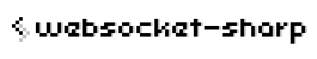

Welcome to websocket-sharp!¶
websocket-sharp supports:
Per-message Compression extension
.NET Framework 3.5 or later versions of .NET Framework (includes compatible environment such as Mono)
Branches¶
master for production releases.
hybi-00 for older draft-ietf-hybi-thewebsocketprotocol-00. No longer maintained.
draft75 for even more old draft-hixie-thewebsocketprotocol-75. No longer maintained.
Build¶
websocket-sharp is built as a single assembly, websocket-sharp.dll.
websocket-sharp is developed with MonoDevelop. So a simple way to build is to open websocket-sharp.sln and run build for websocket-sharp project with any of the build configurations (e.g. Debug) in MonoDevelop.
Install¶
Self Build¶
You should add your websocket-sharp.dll (e.g. /path/to/websocket-sharp/bin/Debug/websocket-sharp.dll) to the library references of your project.
If you would like to use that dll in your Unity project, you should add it to any folder of your project (e.g. Assets/Plugins) in the Unity Editor.
NuGet Gallery¶
websocket-sharp is available on the NuGet Gallery, as still a prerelease version.
You can add websocket-sharp to your project with the NuGet Package Manager, by using the following command in the Package Manager Console.
PM> Install-Package WebSocketSharp -Pre
Usage¶
WebSocket Client¶
using System;
using WebSocketSharp;
namespace Example
{
public class Program
{
public static void Main (string[] args)
{
using (var ws = new WebSocket ("ws://dragonsnest.far/Laputa")) {
ws.OnMessage += (sender, e) =>
Console.WriteLine ("Laputa says: " + e.Data);
ws.Connect ();
ws.Send ("BALUS");
Console.ReadKey (true);
}
}
}
}
Step 1¶
Required namespace.
using WebSocketSharp;
The WebSocket class exists in the WebSocketSharp namespace.
Step 2¶
Creating a new instance of the WebSocket class with the WebSocket URL to connect.
var ws = new WebSocket ("ws://example.com");
The WebSocket class inherits the System.IDisposable interface, so you can create it with the using statement.
using (var ws = new WebSocket ("ws://example.com")) {
...
}
This will close the WebSocket connection with status code 1001 (going away) when the control leaves the using block.
Step 3¶
Setting the WebSocket events.
WebSocket.OnOpen Event¶
This event occurs when the WebSocket connection has been established.
ws.OnOpen += (sender, e) => {
...
};
System.EventArgs.Empty is passed as e, so you do not need to use it.
WebSocket.OnMessage Event¶
This event occurs when the WebSocket instance receives a message.
ws.OnMessage += (sender, e) => {
...
};
A WebSocketSharp.MessageEventArgs instance is passed as e.
If you would like to get the message data, you should access e.Data or e.RawData property.
e.Data property returns a string, so it is mainly used to get the text message data.
e.RawData property returns a byte[], so it is mainly used to get the binary message data.
if (e.IsText) {
// Do something with e.Data.
...
return;
}
if (e.IsBinary) {
// Do something with e.RawData.
...
return;
}
And if you would like to notify that a ping has been received, via this event, you should set the WebSocket.EmitOnPing property to true.
ws.EmitOnPing = true;
ws.OnMessage += (sender, e) => {
if (e.IsPing) {
// Do something to notify that a ping has been received.
...
return;
}
};
WebSocket.OnError Event¶
This event occurs when the WebSocket instance gets an error.
ws.OnError += (sender, e) => {
...
};
A WebSocketSharp.ErrorEventArgs instance is passed as e.
If you would like to get the error message, you should access e.Message property.
e.Message property returns a string that represents the error message.
And e.Exception property returns a System.Exception instance that represents the cause of the error if it is due to an exception.
WebSocket.OnClose Event¶
This event occurs when the WebSocket connection has been closed.
ws.OnClose += (sender, e) => {
...
};
A WebSocketSharp.CloseEventArgs instance is passed as e.
If you would like to get the reason for the close, you should access e.Code or e.Reason property.
e.Code property returns a ushort that represents the status code for the close.
e.Reason property returns a string that represents the reason for the close.
Step 4¶
Connecting to the WebSocket server.
ws.Connect ();
If you would like to connect to the server asynchronously, you should use the WebSocket.ConnectAsync () method.
Step 5¶
Sending data to the WebSocket server.
ws.Send (data);
The WebSocket.Send method is overloaded.
You can use the WebSocket.Send (string), WebSocket.Send (byte[]), WebSocket.Send (System.IO.FileInfo), or WebSocket.Send (System.IO.Stream, int) method to send the data.
If you would like to send the data asynchronously, you should use the WebSocket.SendAsync method.
ws.SendAsync (data, completed);
And also if you would like to do something when the send is complete, you should set completed to any Action<bool> delegate.
Step 6¶
Closing the WebSocket connection.
ws.Close (code, reason);
If you would like to close the connection explicitly, you should use the WebSocket.Close method.
The WebSocket.Close method is overloaded.
You can use the WebSocket.Close (), WebSocket.Close (ushort), WebSocket.Close (WebSocketSharp.CloseStatusCode), WebSocket.Close (ushort, string), or WebSocket.Close (WebSocketSharp.CloseStatusCode, string) method to close the connection.
If you would like to close the connection asynchronously, you should use the WebSocket.CloseAsync method.
WebSocket Server¶
using System;
using WebSocketSharp;
using WebSocketSharp.Server;
namespace Example
{
public class Laputa : WebSocketBehavior
{
protected override void OnMessage (MessageEventArgs e)
{
var msg = e.Data == "BALUS"
? "Are you kidding?"
: "I'm not available now.";
Send (msg);
}
}
public class Program
{
public static void Main (string[] args)
{
var wssv = new WebSocketServer ("ws://dragonsnest.far");
wssv.AddWebSocketService<Laputa> ("/Laputa");
wssv.Start ();
Console.ReadKey (true);
wssv.Stop ();
}
}
}
Step 1¶
Required namespace.
using WebSocketSharp.Server;
The WebSocketBehavior and WebSocketServer classes exist in the WebSocketSharp.Server namespace.
Step 2¶
Creating the class that inherits the WebSocketBehavior class.
For example, if you would like to provide an echo service,
using System;
using WebSocketSharp;
using WebSocketSharp.Server;
public class Echo : WebSocketBehavior
{
protected override void OnMessage (MessageEventArgs e)
{
Send (e.Data);
}
}
And if you would like to provide a chat service,
using System;
using WebSocketSharp;
using WebSocketSharp.Server;
public class Chat : WebSocketBehavior
{
private string _suffix;
public Chat ()
{
_suffix = String.Empty;
}
public string Suffix {
get {
return _suffix;
}
set {
_suffix = value ?? String.Empty;
}
}
protected override void OnMessage (MessageEventArgs e)
{
Sessions.Broadcast (e.Data + _suffix);
}
}
You can define the behavior of any WebSocket service by creating the class that inherits the WebSocketBehavior class.
If you override the WebSocketBehavior.OnMessage (MessageEventArgs) method, it will be called when the WebSocket used in a session in the service receives a message.
And if you override the WebSocketBehavior.OnOpen (), WebSocketBehavior.OnError (ErrorEventArgs), and WebSocketBehavior.OnClose (CloseEventArgs) methods, each of them will be called when each of the WebSocket events (OnOpen, OnError, and OnClose) occurs.
The WebSocketBehavior.Send method can send data to the client on a session in the service.
If you would like to get the sessions in the service, you should access the WebSocketBehavior.Sessions property (returns a WebSocketSharp.Server.WebSocketSessionManager).
The WebSocketBehavior.Sessions.Broadcast method can send data to every client in the service.
Step 3¶
Creating a new instance of the WebSocketServer class.
var wssv = new WebSocketServer (4649);
wssv.AddWebSocketService<Echo> ("/Echo");
wssv.AddWebSocketService<Chat> ("/Chat");
wssv.AddWebSocketService<Chat> ("/ChatWithNyan", s => s.Suffix = " Nyan!");
You can add any WebSocket service to your WebSocketServer with the specified behavior and absolute path to the service, by using the WebSocketServer.AddWebSocketService<TBehavior> (string) or WebSocketServer.AddWebSocketService<TBehavior> (string, Action<TBehavior>) method.
The type of TBehavior must inherit the WebSocketBehavior class, and must have a public parameterless constructor.
So you can use a class in the above Step 2 to add the service.
If you create a new instance of the WebSocketServer class without a port number, it sets the port number to 80. So it is necessary to run with root permission.
$ sudo mono example2.exe
Step 4¶
Starting the WebSocket server.
wssv.Start ();
Step 5¶
Stopping the WebSocket server.
wssv.Stop ();
HTTP Server with the WebSocket¶
I have modified the System.Net.HttpListener, System.Net.HttpListenerContext, and some other classes from Mono to create an HTTP server that allows to accept the WebSocket handshake requests.
So websocket-sharp provides the WebSocketSharp.Server.HttpServer class.
You can add any WebSocket service to your HttpServer with the specified behavior and path to the service, by using the HttpServer.AddWebSocketService<TBehavior> (string) or HttpServer.AddWebSocketService<TBehavior> (string, Action<TBehavior>) method.
var httpsv = new HttpServer (4649);
httpsv.AddWebSocketService<Echo> ("/Echo");
httpsv.AddWebSocketService<Chat> ("/Chat");
httpsv.AddWebSocketService<Chat> ("/ChatWithNyan", s => s.Suffix = " Nyan!");
For more information, would you see Example3?
WebSocket Extensions¶
Per-message Compression¶
websocket-sharp supports the Per-message Compression extension (but does not support it with the context take over).
As a WebSocket client, if you would like to enable this extension, you should set the WebSocket.Compression property to a compression method before calling the connect method.
ws.Compression = CompressionMethod.Deflate;
And then the client will send the following header in the handshake request to the server.
Sec-WebSocket-Extensions: permessage-deflate; server_no_context_takeover; client_no_context_takeover
If the server supports this extension, it will return the same header which has the corresponding value.
So eventually this extension will be available when the client receives the header in the handshake response.
Ignoring the extensions¶
As a WebSocket server, if you would like to ignore the extensions requested from a client, you should set the WebSocketBehavior.IgnoreExtensions property to true in your WebSocketBehavior constructor or initializing it, such as the following.
wssv.AddWebSocketService<Chat> (
"/Chat",
s => s.IgnoreExtensions = true // To ignore the extensions requested from a client.
);
If it is set to true, the service will not return the Sec-WebSocket-Extensions header in its handshake response.
I think this is useful when you get something error in connecting the server and exclude the extensions as a cause of the error.
Secure Connection¶
websocket-sharp supports the secure connection with SSL/TLS.
As a WebSocket client, you should create a new instance of the WebSocket class with a wss scheme WebSocket URL.
var ws = new WebSocket ("wss://example.com");
If you would like to set a custom validation for the server certificate, you should set the WebSocket.SslConfiguration.ServerCertificateValidationCallback property to a callback for it.
ws.SslConfiguration.ServerCertificateValidationCallback =
(sender, certificate, chain, sslPolicyErrors) => {
// Do something to validate the server certificate.
...
return true; // If the server certificate is valid.
};
The default callback always returns true.
As a WebSocket server, you should create a new instance of the WebSocketServer or HttpServer class with some settings for the secure connection, such as the following.
var wssv = new WebSocketServer (5963, true);
wssv.SslConfiguration.ServerCertificate = new X509Certificate2 (
"/path/to/cert.pfx", "password for cert.pfx"
);
HTTP Authentication¶
websocket-sharp supports the HTTP Authentication (Basic/Digest).
As a WebSocket client, you should set a pair of user name and password for the HTTP authentication, by using the WebSocket.SetCredentials (string, string, bool) method before calling the connect method.
ws.SetCredentials ("nobita", "password", preAuth);
If preAuth is true, the client will send the credentials for the Basic authentication in the first handshake request to the server.
Otherwise, it will send the credentials for either the Basic or Digest (determined by the unauthorized response to the first handshake request) authentication in the second handshake request to the server.
As a WebSocket server, you should set an HTTP authentication scheme, a realm, and any function to find the user credentials before calling the start method, such as the following.
wssv.AuthenticationSchemes = AuthenticationSchemes.Basic;
wssv.Realm = "WebSocket Test";
wssv.UserCredentialsFinder = id => {
var name = id.Name;
// Return user name, password, and roles.
return name == "nobita"
? new NetworkCredential (name, "password", "gunfighter")
: null; // If the user credentials are not found.
};
If you would like to provide the Digest authentication, you should set such as the following.
wssv.AuthenticationSchemes = AuthenticationSchemes.Digest;
Connecting through the HTTP proxy server¶
websocket-sharp supports to connect through the HTTP proxy server.
If you would like to connect to a WebSocket server through the HTTP proxy server, you should set the proxy server URL, and if necessary, a pair of user name and password for the proxy server authentication (Basic/Digest), by using the WebSocket.SetProxy (string, string, string) method before calling the connect method.
var ws = new WebSocket ("ws://example.com");
ws.SetProxy ("http://localhost:3128", "nobita", "password");
I have tested this with Squid. It is necessary to disable the following option in squid.conf (e.g. /etc/squid/squid.conf).
# Deny CONNECT to other than SSL ports
#http_access deny CONNECT !SSL_ports
Logging¶
The WebSocket class has the own logging function.
You can use it with the WebSocket.Log property (returns a WebSocketSharp.Logger).
So if you would like to change the current logging level (WebSocketSharp.LogLevel.Error as the default), you should set the WebSocket.Log.Level property to any of the LogLevel enum values.
ws.Log.Level = LogLevel.Debug;
The above means a log with lower than LogLevel.Debug cannot be outputted.
And if you would like to output a log, you should use any of the output methods. The following outputs a log with LogLevel.Debug.
ws.Log.Debug ("This is a debug message.");
The WebSocketServer and HttpServer classes have the same logging function.
Examples¶
Examples using websocket-sharp.
Example¶
Example connects to the server executed by Example2 or Example3.
Example2¶
Example2 starts a WebSocket server.
Example3¶
Example3 starts an HTTP server that allows to accept the WebSocket handshake requests.
Would you access to http://localhost:4649 to do WebSocket Echo Test with your web browser while Example3 is running?
Supported WebSocket Specifications¶
websocket-sharp supports RFC 6455, and it is based on the following references:
Thanks for translating to japanese.
License¶
websocket-sharp is provided under The MIT License.